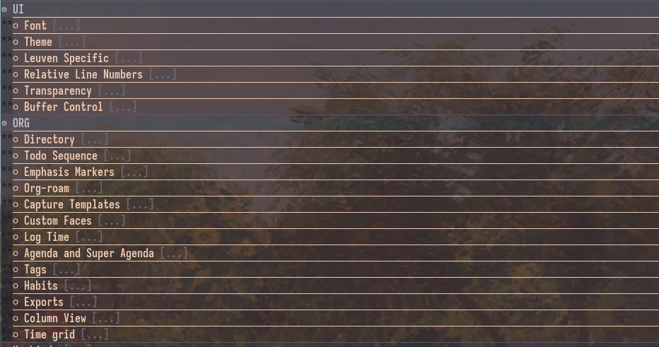

2025-06-04 - Moving Emacs config.el to an org file
Table of Contents

Introduction
I first learned about the literate configuration through Protesilaos, known for his themes like ef-themes and modus, and very helpful emacs tutorials on youtube. What the literate configuration does, is use org-mode as a medium to write the configuration to config.el. This is helpful because it allows you to write documentation in between the code blocks.
How does it work?
Organization
The literate configuration takes advantage of org-mode heading to split up your configuration sections. You can see an example of this in my dotfiles. First you have to create a org file, mine is personally called config.org. I will show how the headings work and how I personally organize my config.org below:
* Information and help * Tasks * UI * ORG * Keybinds * Emacs * Publish * Other Packages
* UI ** Font ** Theme ** Leuven Specific ** Relative Line Numbers ** Transparency ** Buffer Control
Transfer to the actual config.el file
The way this works, is that it uses org-babel-tangle. Once the command is executed it will push out the change to the file that you specify. All the code that you want in your config.el will go into code blocks, specified with the emacs-lisp language.
#+begin_src emacs-lisp configuration code would go here #+end_src
If you want to have it on a per file basis, you can specfiy the file within the code block:
#+begin_src emacs-lisp :tangle /path/to/file configuration code would go here #+end_src
I personally have a file property that goes right under my title property to state that I want everything to be pushed to one file, instead of stating in each code block what file I want.
#+PROPERTY: header-args :tangle /home/joonas/.config/doom/config.el
Now, for instance under my UI -> theme tab, I have a code block to set my theme, for example:
#+begin_src emacs-lisp (setq doom-theme 'doom-gruvbox) #+end_src
They way that tangle works, is that it adds the code into config.el in the order of your code blocks. So in my heading structure shown above, the font code would come first, then the theme, etc. One thing to keep in mind is that tangle will overwrite whatever you currently have in config.el, so if you are moving over to a literate configuration, you have to put all of your configuration into your org file.
Once you are ready to push your code, you have to run org-babel-tangle, which can be ran through M-x. If you are on Doom Emacs, you can enable your literate configuration by uncommenting literate under the :config portion in your init.el. What this does, is everytime you save the file, it will tangle (write) your code blocks into your file. It will also do the same action when doing doom/reload, to reload your private configuration.
Putting it all together
The advantage of this is that you can split up and organize your code, with comments to explain what is going on. For example, under my ORG -> Emphasis Markers section, I have a note that describes what the setting is.
* ORG
** Directory
** TODO Sequence
** Emphasis Markers
Hiding the markers for *bold*, /italize/, and =highlight=.
#+begin_src emacs-lisp
(setq org-hide-emphasis-markers t)
#+end_src
This becomes super powerful, because now instead of having to search through your code and adding comments for each section, you can have organized headers and notes in between your code blocks. Because we are using org-babel-tangle, the only thing you will see in your config.el is your code blocks, without all of your notes and headings surrounding it.